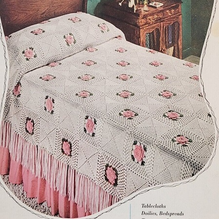

Rose Bower Bedspread Pattern
The color palette of the bedspread can be customized to suit individual preferences and desired aesthetics. From classic and passionate red roses to soft and ethereal pastel hues, the choice of colors enhances the visual impact, allowing the roses to exude their timeless charm.
MATERIALS:
J. & P. COATS "KNIT-CRO-SHEEN," Art. A.64 or
CLARK'S O.N.T. MERCERIZED BEDSPREAD COTTON, Art. B.504:
Single Size Spread, 66 x 108 inches:
35 balls of No. 1 White, 10 balls of No. 46-A Mid Rose and 2 balls of No. 48 Hunter's Green.
Double Size Spread, 78 x 108 inches:
42 balls of No. 1 White, 12 balls of No. 46-A Mid Rose and 3 balls of No. 48 Hunter's Green.
Milward's Steel Crochet Hook No. 7.
FLOWER MOTIF: Starting at center with Mid Rose, ch 6. Join with sl st to form ring.
1st Rnd: Ch 5, (dc in ring, ch 2) 7 times. Join to 3rd ch of ch-5 (8 sps).
2nd Rnd: In each sp around make sc, half dc, 3 dc, half dc and sc. Join.
3rd Rnd: * Ch 4, sc between next 2 petals. Repeat from * around. Join.
4th Rnd: In each loop around make sc, half dc, 5 dc, half dc and sc. Join.
5th Rnd: Repeat 3rd rnd.
6th Rnd: In each loop around make sc, half dc, 7 dc, half dc and sc. Join.
7th Rnd: Repeat 3rd rnd.
8th Rnd: In each loop around make sc, half dc, dc, 7 tr, dc, half dc and sc. Join and break off.
9th Rnd: Attach Hunter's Green to center tr of any petal, sc in same place, * ch 7, holding back on hook the last loop of each tr make 3 tr in center tr of next petal, thread over and draw through all loops on hook (cluster made), ch 4, in same tr make 3-d tr cluster, ch 4 and 3-tr cluster; ch 7, sc in center tr of next petal. Repeat from * around. Join and break off.
10th Rnd: Attach White to any 3-d tr cluster, ch 3, 2 dc in same place, * ch 1, 3 dc in next sp, (ch 1, in next sp make 3 dc, ch 1 and 3 dc) twice; ch 1, 3 dc in next sp, ch 1, in tip of next cluster make 3 dc, ch 3 and 3 dc. Repeat from * around, ending with 3 dc in same place as first 2 dc, ch 1, dc in top of ch-3.
11th to 14th rnds incl: Ch 3, 2 dc in sp just formed, * ch 1, 3 dc in next sp. Repeat from * around, making 3 dc, ch 3 and 3 dc in ch-3 sp at each corner. Join as before. Break off at end of 14th rnd.
PLAIN MOTIF: Starting at center with White, ch 5. Join with sl st to form ring.
1st Rnd: Ch 3, 2 dc in ring, (ch 3, 3 dc in ring) 3 times; ch 1, half dc in top of starting chain.
2nd Rnd: Ch 3, dc in sp just formed, * dc in next 3 dc, in next sp make 2 dc, ch 3 and 2 dc. Repeat from * around, ending with 2 dc in same place as first dc, ch 1, half dc in top of starting chain.
3rd to 9th rnds incl: Ch 3, dc in sp just formed, * dc in each dc across to corner, in corner sp make 2 dc, ch 3 and 2 dc. Repeat from * around. Join as before.
10th Rnd: Ch 3, 2 dc in sp just formed, * (ch 1, skip 3 dc, make 3 dc in next dc) twice; (ch 1, skip 2 dc, make 3 dc in next dc) 8 times; ch 1, in corner sp make 3 dc, ch 3 and 3 dc. Repeat from * around, ending with 3 dc in same place as first 2 dc, ch 3. Join and break off.
For a Single Size Spread, make 77 Flower Motifs and 76 Plain Motifs.
For Double Size Spread make 94 Flower Motifs and 93 Plain Motifs.
Sew Motifs neatly together, alternating Flower and Plain Motifs and making 9 rows of
17 Motifs for Single Size Spread, and 11 rows of 17 Motifs for Double Size Spread.
FRINGE: Cut 10 strands of White, each 12 inches long. Double these strands to form a loop. Insert hook in first sp on one long side of Bedspread and draw loop through. Draw loose ends through loop and pull up tightly to form a knot. Make a Fringe in each sp around two long sides and one short side. Trim ends evenly.
HOME